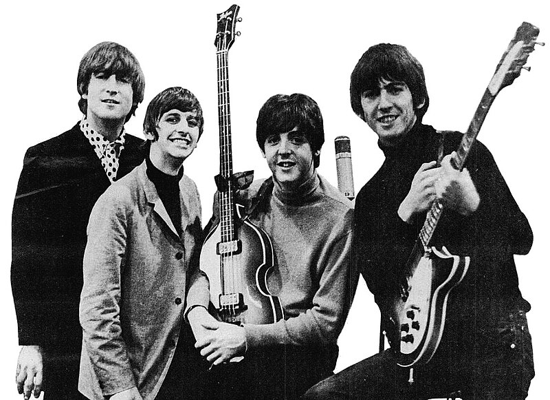

The Beatles — британская рок-группа, которая была основана в Ливерпуле в 1960 году. В состав группы входили Джон Леннон, Пол Маккартни, Джордж Харрисон и Ринго Старр. Эта группа изменила музыкальный мир и оставила незабываемый след в культуре 60-х годов.
Фото: Группа The Beatles в начале их карьеры.